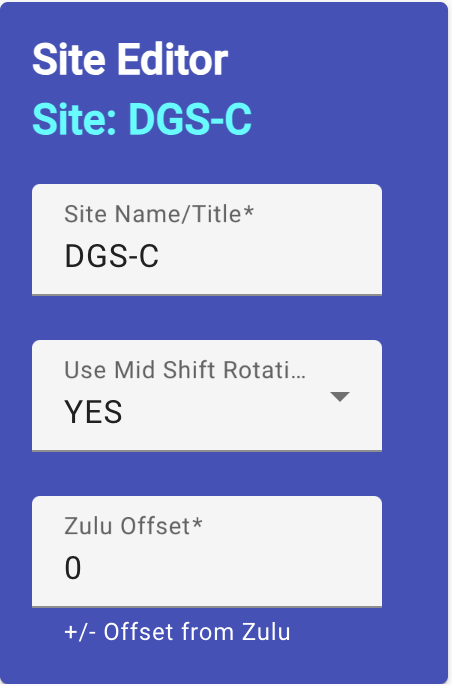

Site Basic Information
(Site Scheduler/Leadership only)
The site is initially defined by three basic pieces of information and the
editor allows you to edit each piece.

-
First is the site's title. What do you call the site and/or location?
This is the spot you edit this.
-
The second input is a Yes or No for a rotational mid-shift at the site.
A site may have a requirement for a minimally manned midnight shift,
manned on a rotational basis. The assignment of employees to this
shift is handled as employee variations, but the system needs to know
if the site will use this feature. Choose "Yes" or "No" to signify
whether or not the site will use rotational mid-shifts.
-
The last value on this view is for Zulu (GMT/UTC) offset. This value is
between -12.0 to 12.0 and is the number of hours your site's local time
is in relation to Zulu, Greenwich Mean Time or Universal Time Coordinate.
Example: Hawaii Standard Time is -10 hours from Zulu.
Site Editing Overview
Editing the Site Workcenters